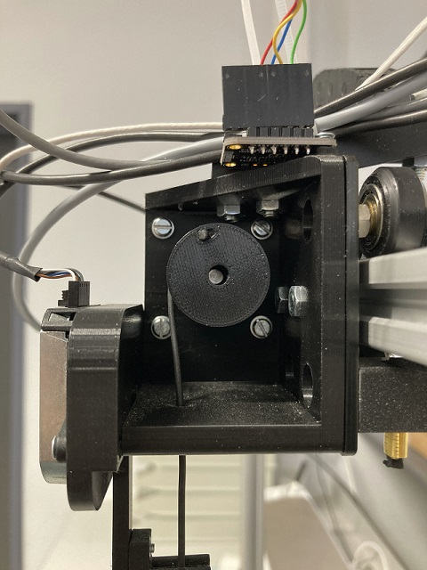
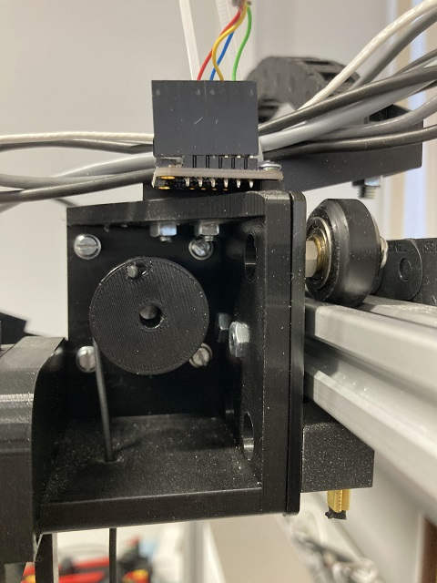
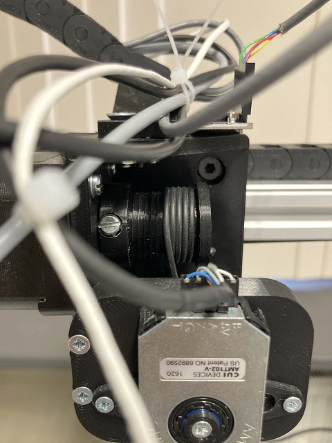
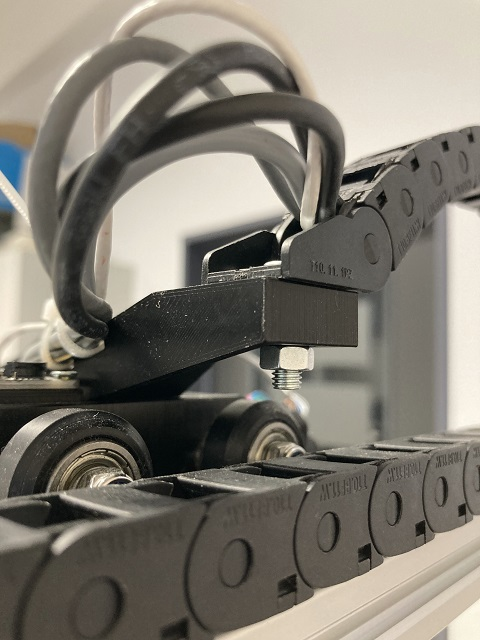
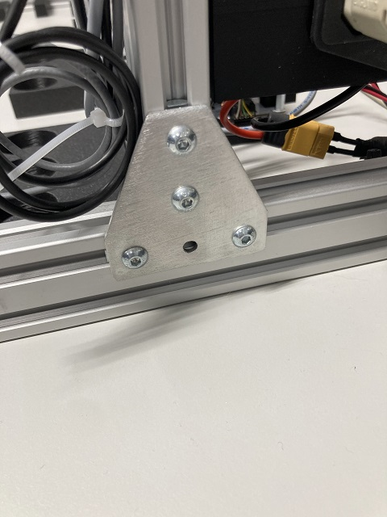
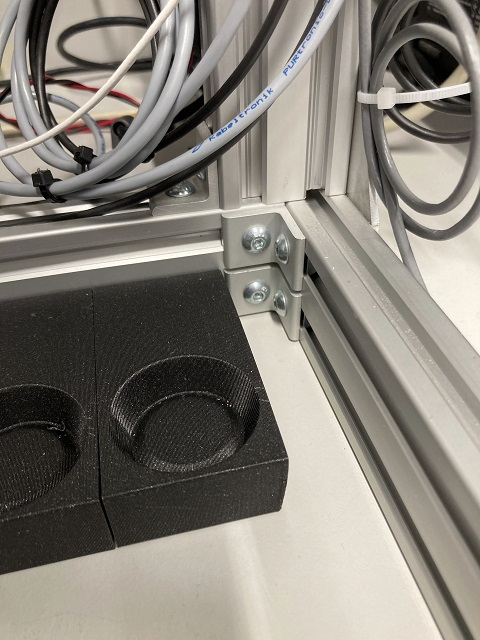
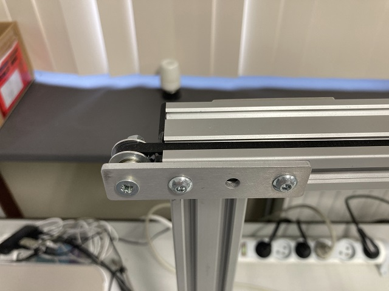
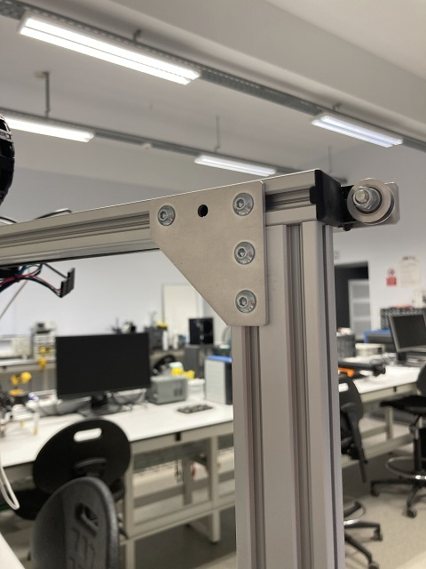
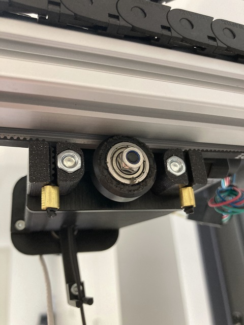

build.md
Building instructions.
TODO: complete this further.
For now: refer to the Fusion360 files.
Screws
The following images try to convey which bolts and nuts are needed at which spots in the crane. I will edit these in the future to have annotation on them.










